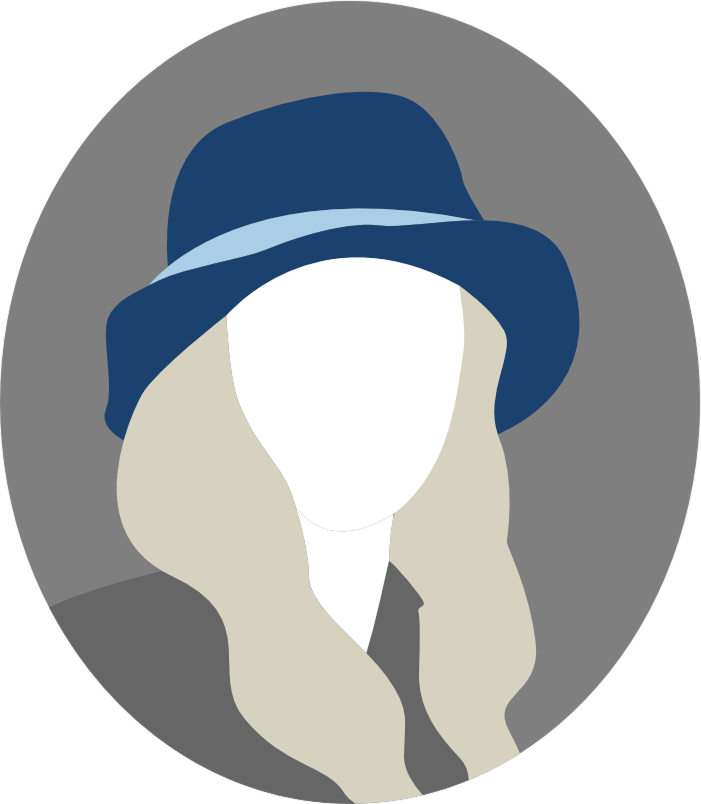
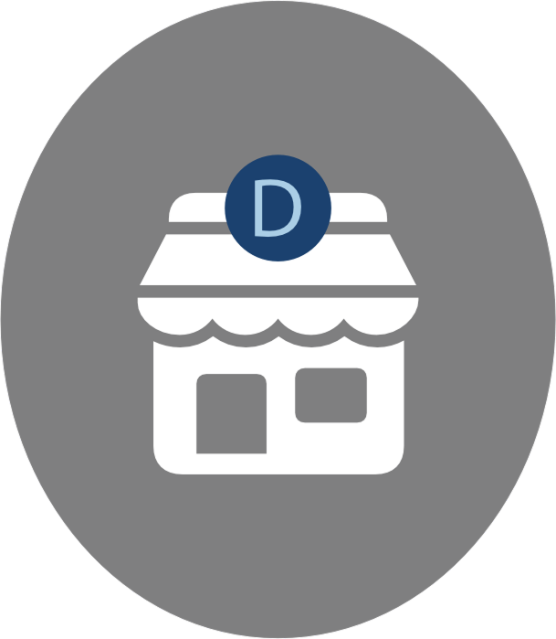
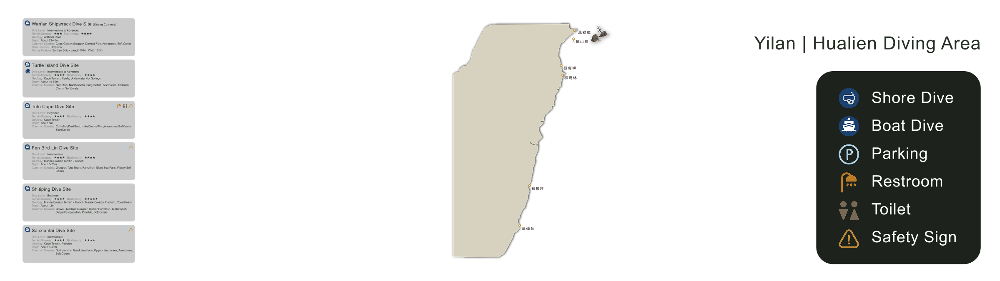
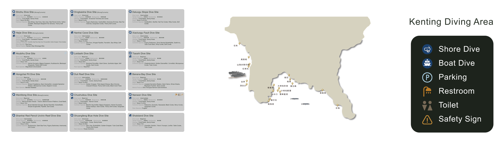
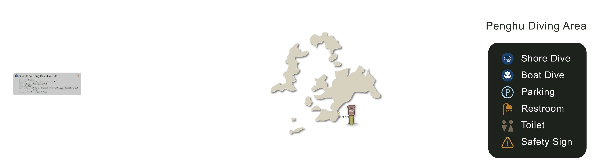
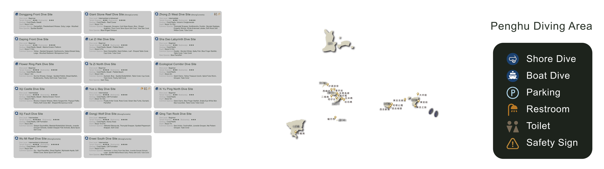
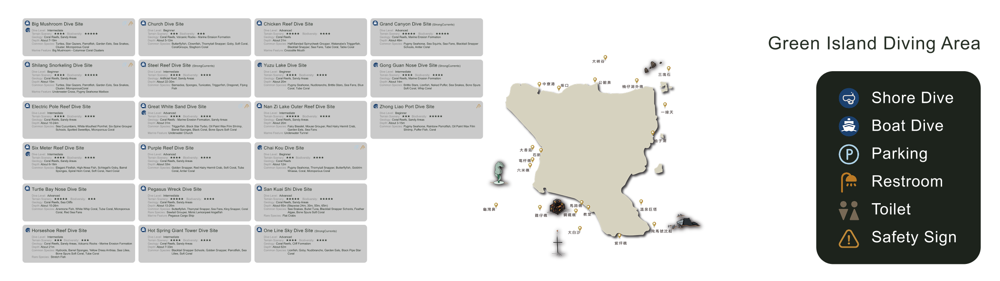
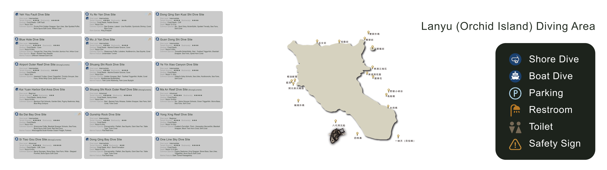
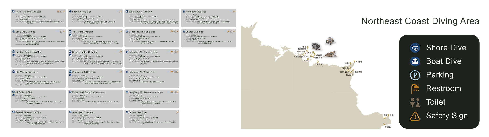
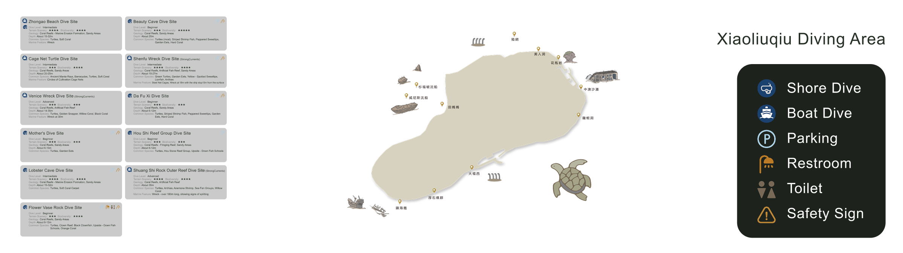

Diving+ reorganizes fragmented dive-site information, course discovery, and community participation into a clearer decision journey for occasional and entry-level divers. As a recruitment-focused case, the project demonstrates UX research synthesis, information architecture, feature prioritization, and ecosystem-level product extension.
Diving+ is positioned here as a recruitment-ready product case that moves from user research and market reading to information architecture, feature definition, interface direction, and service extension. The project demonstrates an ability to structure a fragmented leisure ecosystem into a coherent product experience while keeping the visual language approachable for younger and lower-frequency divers.


The category opportunity came from a gap between enthusiasm and decision clarity. Diving is visually attractive and culturally rich, yet site information, participation routes, and trust signals are often scattered across stores, social channels, and word-of-mouth networks. Diving+ reframes that fragmentation as a product problem: how to help users evaluate where to go, whom to trust, and what to do next without overwhelming them.

The service is framed for a broad diving ecosystem that includes curious non-divers, beginners, certified divers, instructors, shops, and related media communities. From a recruitment perspective, the core challenge was designing a product structure that serves both discovery-oriented newcomers and information-heavy experienced users without overwhelming either group.
Diving Beginners
Diving Instructors
Equipment Developers
Diving Influencers
Digital Media
Coach
Dive Shops
The service targets two linked audiences. On the user side, it supports curious beginners and occasional divers who need readable information before acting. On the business side, it gives dive stores and instructors a clearer surface for discovery, credibility, and course conversion. That two-sided scope is what turns the project from an app concept into a service ecosystem.

Target Audience

Usage Environment

The research suggested that the product should not compete on feature density alone. It needed a smaller set of strong product rules that could make browsing, evaluating, and committing feel easier for lower-frequency users while still supporting business-side visibility.
The survey points toward a younger, lower-frequency audience, which changes the product brief. The real challenge is not to create more diving content, but to make information easier to trust, compare, and act on. That insight shaped the decision to foreground destination browsing, service clarity, and community-supported confidence instead of building a forum-first experience.
The survey clarified who the product should serve and why the interface needed to be highly legible. Scuba diving with oxygen tanks is the dominant activity at 70.2%, the largest age group is 15 to 25 at 72.6%, and 59.6% of respondents dive five times or less per year. These findings point to a product opportunity centered on entry accessibility, lightweight guidance, and fast access to trustworthy information.
Scuba diving with oxygen tanks is the main participation type, so product value should start from site information, safety context, and trip planning.
Users aged 15 to 25 form the dominant segment, which supports a more social, contemporary, and approachable interface tone.
Most respondents dive five times or less annually, making clarity, legibility, and low memory burden essential.
That split suggests the platform should balance practical pre-dive information with destination discovery and lifestyle-oriented browsing.
Most users fall into a younger demographic, which suggests the product should feel contemporary, social, and easy to enter without requiring expert knowledge from the start.
Because many users dive only occasionally, the experience should reduce memory burden through clear labels, structured content, and quick paths to essential dive information.
Scuba diving remains the central activity, so the product must foreground site details, conditions, certifications, safety, equipment, and trip planning.
This section frames the case through two linked viewpoints: Elsa as an end-user persona and Fun Dive Diving Center as a service-side persona. Together they show how Diving+ had to support both user trust and partner-store visibility inside the same ecosystem.


Awareness begins through Instagram, Facebook, YouTube, Spotify, and podcasts, framing diving as both a sport and a lifestyle culture.
Users compare information quality, store credibility, pricing clarity, and course accessibility before deciding whether the platform feels reliable enough to use.
The product guides users toward two outcomes: continuing to use the platform as an exploration tool and successfully joining courses, events, or dive-related activities.
Instagram, Facebook, YouTube, podcasts, and creator-style content broaden awareness and make the category feel less intimidating.
Users weigh course quality, instructor credibility, site detail, and interface clarity before they are willing to install and act.
Friends, family, and dive partners drive stronger adoption than pure ads, so the product must encourage sharing and visible credibility.
Initial awareness is built through Instagram, Facebook, YouTube, Spotify, and podcasts, positioning diving not only as a sport but also as a social and lifestyle-oriented experience.
Users begin comparing information quality, store credibility, and learning accessibility. This stage requires a visual language that feels trustworthy, readable, and easy to navigate.
The journey is designed to lead users toward two main outcomes: successfully downloading and using the platform, and successfully enrolling in diving-related courses and activities.
Elsa, a 32-year-old manager with extensive diving experience, represents a user driven by exploration, ocean preference, and meaningful outdoor engagement. Her profile helps define both interface tone and service priorities.
Referrals from friends, family, and diving partners play a stronger role than advertising alone, while Facebook marketing supports visibility. This indicates that community trust is central to the platform’s growth model.
The service connects two key values: course instruction and tourism aspects. Diving+ therefore works as both a learning platform and a gateway into wider underwater culture and travel-oriented experiences.
This section isolates the project logic behind Diving+, showing how observation, research, and service-side signals were translated into product decisions. For a recruitment portfolio, the value lies in making the reasoning chain explicit rather than leaving it implied by polished screens.
The project moved through four connected stages. Each stage narrowed a broad leisure category into a more legible product system, then extended that system into interface structure and business-facing workflow thinking.
Mapped divers, instructors, shops, media touchpoints, and participation contexts.
Used survey findings and persona logic to identify trust, clarity, and accessibility as the main design constraints.
Converted insights into dive maps, activity flows, community features, and profile-based records.
Expanded the system into workflow logic and hardware concepts to show broader product thinking.
Most users are not high-frequency divers, so the interface needed to reduce memory burden and make key information quickly scannable.
Dive sites, courses, and stores all depend on credibility. Product structure therefore had to support evaluation before conversion.
The system serves both divers and partner stores, which means user exploration and business visibility have to be designed together.
The final output demonstrates research synthesis, service framing, interface hierarchy, and concept extension in one continuous narrative.
This workflow visual makes the service model legible. It shows how referral-heavy growth, course-oriented value, and tourism-related positioning connect to the partner-store side of the Diving+ ecosystem.

The visual system combines marine-inspired blue tones, simplified interface structures, and calm geometric forms to communicate clarity, trust, exploration, and environmental awareness across both digital and promotional applications.

To make the case read more clearly for recruitment, the product can be understood as four connected layers instead of a flat list of features. This framing shows how the system supports both user-side exploration and service-side conversion.
Dive-site maps, area cards, and detail imagery help users compare destinations, read conditions, and understand place character before committing.
Courses, activities, and events turn abstract interest into a concrete path for learning, booking, and joining diving-related experiences.
Profiles, posts, and dive records transform individual experience into visible credibility, repeat engagement, and community contribution.
The goggles concept extends the service beyond the mobile screen, showing how the product logic could evolve into underwater use scenarios and wearable interaction.

The core structure of Diving+ is organized around what users need to discover, evaluate, join, and keep. Each part of the product supports a different stage of the decision journey rather than functioning as an isolated feature bucket.
Community content is framed as a confidence-building layer where posts and shared records help users understand places through experience rather than abstract data alone.
Dive-site information gives users visibility into conditions, environment, and suitability before they commit to a location or operator.
Ecology-oriented content is placed inside the browsing experience so that environmental awareness becomes part of normal product engagement.
Courses and activities convert interest into action, connecting browsing behavior to learning, scheduling, and real participation.
The goggles concept demonstrates how the service logic could continue beyond the phone and into an underwater interface context.
The interface should read as a set of core product surfaces rather than a single compressed mockup. This layout restores the major screen groups from the original case and presents them with a cleaner editorial structure closer to project01, while keeping the images borderless. The connecting labels indicate how users move from one surface to the next. On mobile, each flow turns into a horizontal swipe sequence so the screens can be read step by step.


This part of the product translates dive planning into a visual system. The map creates geographical orientation, while the adjacent cards expose the practical filters that matter when users compare where to go next.


Detailed site imagery helps users compare environment, visibility mood, and place character before committing to a trip. This section extends the map into a more visual decision layer.









The goggles concept is positioned here as an ecosystem extension rather than a separate project. It tests how Diving+ could move from pre-dive planning on mobile into real-time underwater assistance, lightweight recording, and wearable interaction.
The ideation stage explores how a wearable object could inherit the visual language of the app while responding to underwater ergonomics, display readability, and action constraints.


The hardware logic view makes the concept legible as a designed object rather than a speculative sketch alone. It clarifies how display protection, input, recording, sealing, and core electronics could be organized into one wearable form.

The control layout is simplified around high-frequency actions so that operation remains understandable even in a constrained underwater context.
Photo capture feedback is designed to be immediate and unmistakable, reducing uncertainty during underwater interaction.


Recording status uses simple visual cues so the user can confirm capture state at a glance.


The underwater display concept focuses on what information deserves to remain visible in-context: dive status, environmental cues, and system feedback that can be read quickly without overloading the user.

This sequence explains the operational flow of the diving goggles as a wearable interaction concept, from setup and pairing to underwater capture and logging. It functions as a usage tutorial and experience walkthrough rather than the final project outcome.


The sequence demonstrates how onboarding, underwater interaction, and content capture could be experienced as one connected wearable-service flow.
The project outcome is the consolidation of research, service logic, interface design, and wearable extension into one recruitment-ready case. Rather than ending at individual screens, the proposal frames Diving+ as a coherent ecosystem with clearer product positioning and stronger storytelling value.
A clearer recruitment-facing narrative that connects UX research, service strategy, interface design, and speculative hardware into one continuous case structure.
A multi-surface system showing capability in information architecture, feature prioritization, cross-device thinking, and ecosystem-level product direction rather than isolated mockup production.
A future-facing vision where mobile planning, community records, and underwater wearable interaction share the same design language, product logic, and experiential rhythm.